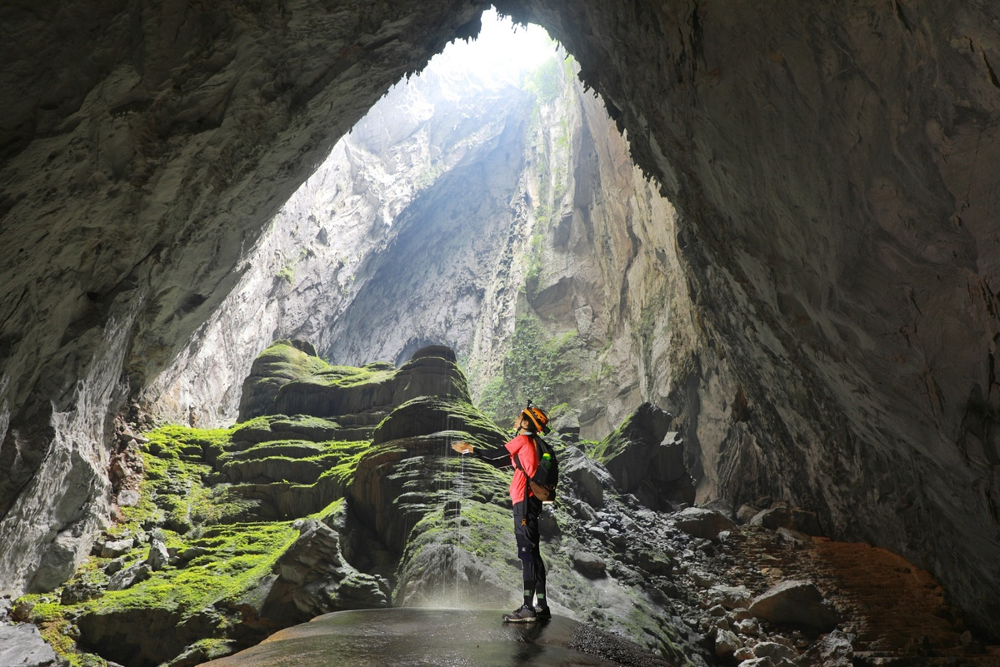

1.Vườn quốc gia Ba Bể
Ba Bể có những dãy núi đá vôi dựng đứng, nhiều thung lũng lớn và rừng cây xanh rì bao bọc là điểm đến lý tưởng cho du khách mê phiêu lưu, khám phá. Các thác nước, hang động, hồ ở đây tạo nên một khung cảnh thiên nhiên kỳ thú với hơn 550 loài động thực vật quý hiếm. Khám phá Ba Bể bằng thuyền hay trekking hoặc đạp xe xuyên rừng chắc chắn sẽ cho bạn nhiều trải nghiệm đáng nhớ, sau đó hãy nghỉ ngơi, nạp năng lượng ở những căn homestay, nhà nghỉ trong các bản Tày địa phương.
2.Dãy núi Hoàng Liên Sơn
Hoàng Liên Sơn được mệnh danh là Alps xứ Đông Dương (Tonkinese Alps) bởi có những ngọn núi cao hiểm trở như Fansipan, đỉnh cao nhất Việt Nam. Từ các rặng núi uốn lượn, ruộng bậc thang đổ xuôi xuống những thung lũng ven sông du khách sẽ tìm thấy các bản làng Mông, Dao Đỏ, Giáy nằm ẩn hiện.
3.Thác Bản Giốc
Bản Giốc là một trong những thác nước đẹp và nổi tiếng nhất Việt Nam và hình ảnh của thắng cảnh này xuất hiện ở vô số các nhà nghỉ, trọ cho du khách. Dòng nước từ Quây Sơn đổ xuống tạo nên thác Bản Giốc đánh dấu hai bờ biên giới Việt Nam và Trung Quốc với khung cảnh ấn tượng. Du khách có thể tham quan thác bằng bè tre, đi sát gần thác để cảm nhận những dòng nước đổ ầm ào tạo bọt tung trắng xóa.
4.Vịnh Hạ Long
Phong cảnh vịnh Hạ Long có sự kết hợp của hàng nghìn núi đá vôi, nước biển xanh trong hiền hòa là điểm đến hút khách bậc nhất Việt Nam. Với hơn 2.000 đảo lớn nhỏ vịnh Hạ Long cho du khách vô vàn trải nghiệm từ ngắm cảnh tới các hoạt động du thuyền, chèo kayak, leo núi, tắm biển, bay thủy phi cơ... Nếu muốn tránh những điểm đông khách, bạn có thể di chuyển qua vịnh Lan Hạ để tận hưởng một vùng vịnh đẹp yên bình khác.
5.Vườn quốc gia Phong Nha Kẻ Bàng

Với đồi núi trập trùng bao phủ bởi những cánh rừng nhiệt đới rậm rạp cùng các dòng sông quanh co giữa các khe núi, Phong Nha - Kẻ Vàng là một trong những vườn quốc gia đẹp bậc nhất Việt Nam. Càng đi sâu và xa vào khu vực này du khách sẽ càng khám phá được vẻ đẹp ngoạn mục nơi này và chắc chắn chọn vào lịch trình du lịch. Đặc biệt chỉ số ít du khách được khám phá các kỳ quan như hang Sơn Đoòng, hay chơi zipline, chèo kayak ở Hang Tối, hoặc len lỏi trong động Thiên Đường...
6.Hang Sơn Đoòng
Nngoài Vườn quốc gia Phong Nha - Kẻ Bàng, nhóm biên tập Lonely Planet đặc biệt chọn Sơn Đoòng là kỳ quan thiên nhiên của Việt Nam vì đây là hang động lớn nhất không chỉ ở Đông Nam Á mà cả thế giới. Sơn Đoòng dài hơn 5 km, cao 200 m và nhiều chỗ rộng tới 150 m. Hang nằm trong dãy núi đá vôi thuộc vùng biên giới Việt - Lào, được Hồ Khanh, một người dân địa phương tình cờ tìm ra khi tránh mưa vào năm 1991. Ngày nay du khách phải đặt trước tour với điều kiện đủ thể lực, biết bơi... mới được khám phá Sơn Đoòng trong hành trình 4 ngày.
7.Thủy Sơn
Thủy Sơn là ngọn núi lớn và nổi tiếng nhất trong cụm núi Ngũ Hành Sơn, cùng với các hang động xung quanh tạo thành trung tâm tâm linh tín ngưỡng Phật giáo và Hindu giáo xưa. Du khách có thể leo lên Thủy Sơn theo 2 con đường, trong đó tuyến gần biển hơn cho phong cảnh đẹp hơn. Tới đỉnh bậc thang trên núi là động Tàng Chơn ngay sau là chùa Linh Ứng.
8.Mũi Né
Mũi Né (Phan Thiết) là điểm du lịch nổi tiếng với những cồn cát trắng đỏ rộng mênh mông. Đồi cát hồng và đồi cát trắng là hai "đặc sản" ở đây, thu hút rất nhiều du khách đến chụp hình, trải nghiệm trượt cát đi, đi xe địa hình... Những cồn cát ở đây được thiên nhiên tạo hình rất kỳ lạ và thay đổi theo từng giờ.
9.Phú Quốc
Được bao bọc bởi làn nước trong xanh, những bãi biển cát trắng mịn, Phú Quốc là nơi lý tưởng để du khách "sống chậm", thưởng thức coctail, tắm nắng và đằm mình vào biển xanh. Nếu có máu phiêu lưu hơn, bạn hãy thuê một chiếc xe máy và khám phá những cung đường đất ít người đi.
10.Bãi Sao
Bãi Sao có bờ cát trắng mịn trải dài, cong cong hình lưỡi liềm ôm bờ biển nước xanh trong vắt, chỉ cách An Thới (cảng chính nằm ở phía bắc Phú Quốc) vài km. Gần Bãi Sao có một số nhà hàng ven biển để du khách nghỉ chân, dạo biển hoặc tham gia các trò chơi dưới biển trước khi lên thưởng thức hải sản.